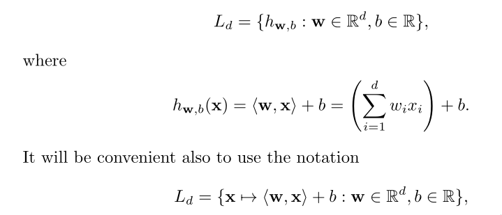

Linear predictors
Many learning algorithms that are being widely used in prac‐
tice rely on linear predictors.
Several hypothesis classes belonging to this family ‐ halfspaces,
linear regression predictors, and logistic regression predictors.
Relevant learning algorithms: linear programming, and the Percep‐
tron algorithm for the class of halfspaces, and the Least Squares
algorithm for linear regression.
The class of affine functions

which reads as follows: Ld is a set of functions, where each
function is parameterized by w and b, and each function takes as
input a vector x and returns as output the scalar <w,x>+b.